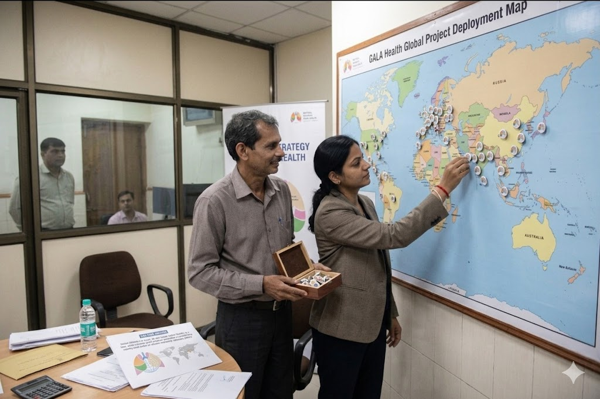
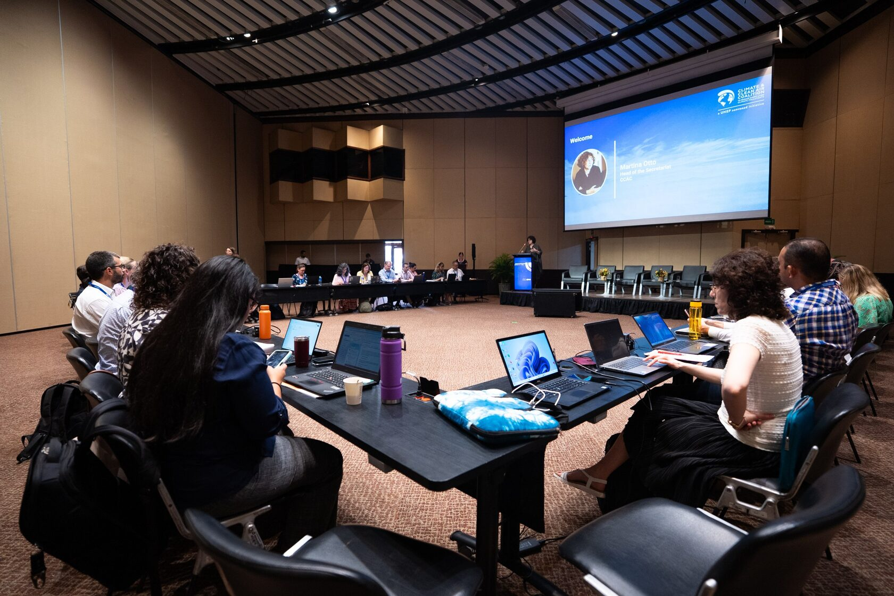

About
A lean, action-oriented global platform accelerating country-level action on chronic respiratory diseases.
About GALA Health

Who we are
Global Alliance for Lungs, Air and Health (GALA Health) is a lean, action-oriented global platform committed to accelerating country-level action on chronic respiratory diseases (CRDs).
We work with governments, health systems, and partners to translate policy commitments into measurable impact — strengthening prevention, improving diagnosis, expanding access to treatment, and enhancing long-term disease management at scale. Our support includes technical assistance, implementation guidance, policy advisory services, and capacity-building tailored to national contexts.
Elevating Lung Health on the Global Agenda
Beyond technical support, GALA Health advances advocacy to reposition lung health as a central public health and development priority. We work to ensure that chronic respiratory diseases are recognized in national strategies, global health financing discussions, and sustainable development frameworks — transforming lung health from a neglected issue into a policy imperative.
Strategic Advocacy
Beyond technical support, GALA Health advances advocacy to reposition lung health as a central public health and development priority.
Policy Integration
We work to ensure that chronic respiratory diseases are recognized in national strategies, global health financing discussions, and sustainable development frameworks - transforming lung health from a neglected issue into a policy imperative.
Our Approach
Our work is grounded in three core principles:
Country-focused
We design practical, system-level solutions that strengthen national capacity and enable countries to deliver on their own priorities and locally defined strategies.
Evidence-driven
Our recommendations are informed by rigorous data, economic analysis, and implementation science.
Partnership-based
We collaborate with ministries of health, city administrations, multilateral agencies, civil society, and academic institutions - strengthening and leveraging existing systems and networks.
